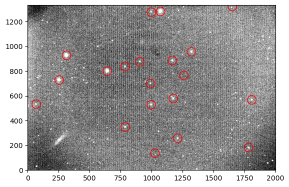
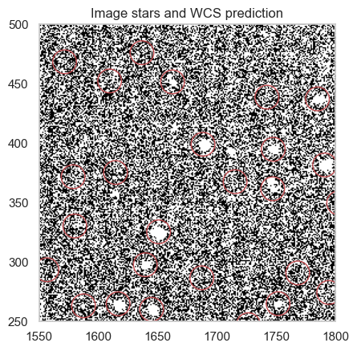
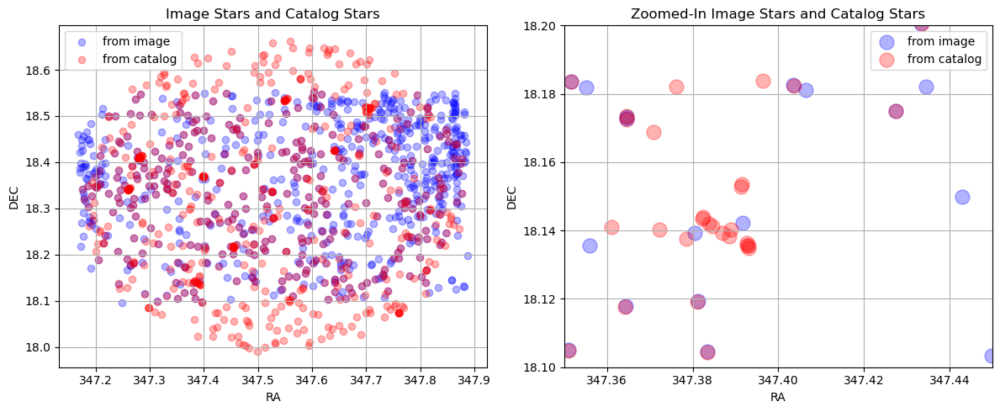
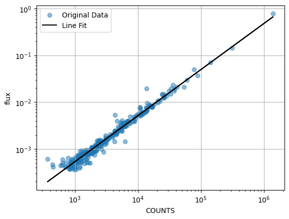

A prototype Python workflow that finds the stars in a telescope image, works out where they are on the sky, and compares their measured brightness with a star catalogue.
A camera on a telescope records each star as a number of counts. Those counts depend on the telescope, the camera and the night, so they don't directly say how bright the star really is. Photometric calibration links the two: measure stars whose brightness is already known from a catalogue, and use them to convert counts into flux.
This was one of my first substantial coding projects. In a Jupyter notebook, I built each step of that chain on a single image, from the raw picture to a comparison with catalogue fluxes.
Finding and measuring the stars
I first subtracted the typical sky level from the image, so that what remains is mostly light from the stars. To find the stars, I used the DAOStarFinder tool from photutils, and I measured each one by adding up the counts inside a small circle around it (aperture photometry).

The image after sky subtraction, contrast-stretched to show faint stars. The red circles mark the bright stars used in the next step to place the image on the sky.
Placing the image on the sky
To compare with a catalogue, each star needs sky coordinates (right ascension and declination), not just a pixel position. Finding them is called plate solving. I used the twirl package, which matches the pattern of the brightest stars in the image with stars from the Gaia catalogue and returns the transformation between pixels and sky (a World Coordinate System, or WCS).

A check of the solution: in a small part of the image, the red circles show where the WCS predicts catalogue stars should be.
Matching with the catalogue
With sky coordinates for every detected star, I queried the Pan-STARRS DR2 catalogue (through the MAST catalogue service) for the stars in the same field and their known r-band brightness. I then paired each image star with the catalogue star at the same position, and dropped any star that matched more than one partner.

Stars from the image (blue) and from Pan-STARRS (red). Where they overlap the points look purple. Right: a zoom on a small region.
From counts to flux
Finally, I converted the catalogue magnitudes of the matched stars into fluxes and plotted them against the counts I measured. If the measurements are consistent, the points lie on a straight line, and that line is the conversion from counts to flux for this image.

Catalogue flux against measured counts for the matched stars, with a straight-line fit (black), shown as a visual check.